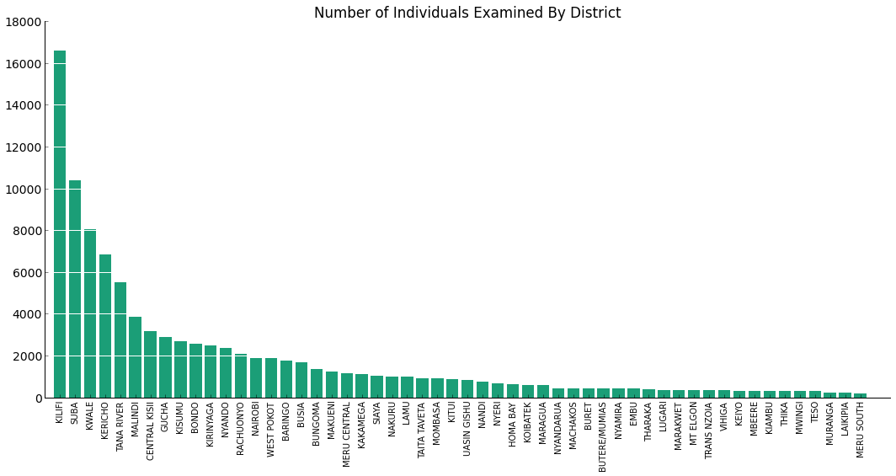

Malaria in Motion
Amy Chen, David Ma, Mark Martinez
Table of Contents
Introduction
Malaria is an infectious disease that presents a massive public health problem in tropical areas of the world, particularly in sub-Saharan Africa. As malaria is a preventable disease (e.g. using bednets to prevent mosquito bites) and a treatable disease, there are many policies being implemented to control malaria WHO on malaria control. As such, it is important to figure out where, when, and how to best target these such policies. Perhaps most simply, it would make sense to target malaria control programs in places where malaria is most prevalent.
However, this does not take into account the spread of malaria across space due to human movement: as people move from one place to another, they can also import malaria from one place to another. For example, a place that has a high malaria prevalence due to environmental factors that are favorable to the malaria parasite but is rather isolated in terms of human travel would suggest a very different control policy from a place where the environmental factors might not be as favorable to malaria parasites, but receives a lot of incoming travel from high-prevalence places and hence has a lot of imported malaria. A recent study incorporated detailed migration patterns (from cell phone data) with malaria prevalence to characterize malaria transmission “source” and “sink” regions in Kenya Wesolowski 2012.
However, while it is widely acknowledged to be significant, the specific dependence of malaria upon seasonality is not well-defined seasonality paper; the best estimates of malaria prevalence represent the maximum prevalence during the year MAP: Malaria Atlas Project. As the study depended on this static estimate of malaria prevalence, it did not characterize how malaria transmission may also vary over seasons. In our project, we combine geotagged monthly weather data with malaria survey data to come up with estimates for malaria prevalence for each month. We then incorporate mobility data by month and perform network analysis to come up with several ways of combining malaria prevalence and mobility information to characterize and rank districts.
Data
Movement data was obtained via personal communication with Amy Wesolowski. It gives counts of trips taken from one district each month, normalized by the number of days in the month (so, average count of trips per day). Districts are an administrative division in Kenya, size somewhere between counties and states in the United States Wikipedia article - in particular, these are for the 69 districts under the 2009 Constitution of Kenya. While we do not have information on the length of these trips, we were informed that they are significantly shorter than one month (majority under two weeks).
District boundary data was also obtained via personal communication with Amy Wesolowski. These correspond to the 69 districts under the 1999 Constitution of Kenya, which were the same districts used to define the mobility data. The file ke_district.shp encodes the spatial shape and location of the 69 districts (as ArcGIS polygons) as well as an attribute table that lists several characteristics for each district (including name and populuation from a census).
Malaria prevalence data was obtained from the Malaria Atlas Project (MAP). While MAP has many detailed estimates related to malaria prevalence in Kenya, these are all static in time. However, their raw data, which consists of geotagged malaria surveys, do have month and year identified. This data is publicly available online at http://www.map.ox.ac.uk/explorer/.

Weather data was obtained via personal communication with Professor Caroline Buckee (HSPH); its original source is from NASA’s MERRA project which uses historic satellite imagery to provide weather estimates MERRA project. The data we used consists of precipitation (in kg/(m^2 s), or flux in terms of mass per area per time) and temperature (K). Data points are on a lattice of .67° longitude by .5° latitude for every month January 2009-December 2011. Apart from a few select number of major cities, other historical weather data for the entirety of Kenya is not readily available online.
Example Temperature Data:
Example Precipitation Data:
The Precipitation column in our dataset did not vary from month-to-month. It only varied across locations. While this is a limitation, we definitely believe it to be better than no precipitation.
Precipitation did vary across districts:
We recognized that it would not be prudent to keep every district in Kenya for our analysis due to the sparsity of data in some of the regions. These are also districts with low population. We removed 15 districts to go from 69 to 54 total districts.
In the map below, each dot shows a survey from the Malaria Prevalence dataset. The 54 districts shown are the ones we decided to keep in our final analysis.
Regression
In order to impute missing data as well as describe an associative relationship between Precipitation, Temperature, and Malaria Prevalence, we turned toward regression models. We immediately struck the possibility of using a multiple linear regression due to the fact that Malaria Prevalence is measured as a percentage. Thus, a linear model runs the risk of outputting predicted probabilities of less than 0 or greater than 1, which would hinder further analysis.
Instead, we decided to use the Expanded Combined Data from above to fit a logit regression model. In a logit regression, the dependent variable is binary. In our original Combined Data, we only have aggregated Malaria Prevalence. Thus, by expanding our survey dataset into individuals, we are able to use the Positive column as the dependent variable.
Due to its rich output and statistical computing tools, we opted to use R to run our regressions. The R code we used is below.
> simulated <- read.csv('clean/simulated_expanded.csv')
> mylogit <- glm(Positive ~ Precipitation + Temperature + District,
data = simulated, family = 'binomial')
> summary(mylogit)
Call:
glm(formula = Positive ~ Precipitation + Temperature + District,
family = "binomial", data = simulated)
Deviance Residuals:
Min 1Q Median 3Q Max
-1.8934 -0.7584 -0.4352 -0.0002 3.4891
Coefficients:
Estimate Std. Error z value Pr(>|z|)
(Intercept) -4.071e+01 3.191e+00 -12.757 < 2e-16 ***
Precipitation -8.149e+03 1.684e+03 -4.840 1.30e-06 ***
Temperature 1.270e-01 1.071e-02 11.862 < 2e-16 ***
DistrictBONDO 3.317e+00 1.432e-01 23.162 < 2e-16 ***
DistrictBUNGOMA 3.471e+00 1.345e-01 25.804 < 2e-16 ***
DistrictBURET -1.683e+00 1.017e+00 -1.654 0.098056 .
DistrictBUSIA 4.733e+00 1.398e-01 33.846 < 2e-16 ***
DistrictBUTERE/MUMIAS 3.031e+00 1.605e-01 18.887 < 2e-16 ***
DistrictCENTRAL KISII 2.064e+00 1.869e-01 11.045 < 2e-16 ***
DistrictEMBU -9.550e-01 5.967e-01 -1.601 0.109455
DistrictGUCHA 2.984e+00 2.183e-01 13.669 < 2e-16 ***
DistrictHOMA BAY 2.939e+00 1.981e-01 14.837 < 2e-16 ***
DistrictKAKAMEGA 2.997e+00 1.410e-01 21.251 < 2e-16 ***
DistrictKEIYO -1.375e+01 2.181e+02 -0.063 0.949742
DistrictKERICHO 2.985e+00 1.545e-01 19.324 < 2e-16 ***
DistrictKIAMBU -1.352e+01 2.184e+02 -0.062 0.950645
DistrictKILIFI 1.643e+00 1.141e-01 14.396 < 2e-16 ***
DistrictKIRINYAGA 1.929e-01 1.915e-01 1.007 0.313869
DistrictKISUMU 4.125e+00 1.443e-01 28.592 < 2e-16 ***
DistrictKITUI 1.042e+00 1.666e-01 6.251 4.07e-10 ***
DistrictKOIBATEK -3.081e-01 3.279e-01 -0.940 0.347454
DistrictKWALE 1.762e+00 1.198e-01 14.714 < 2e-16 ***
DistrictLAIKIPIA -1.433e+01 2.728e+02 -0.053 0.958098
DistrictLAMU -2.002e+00 3.374e-01 -5.934 2.96e-09 ***
DistrictLUGARI 1.475e+00 2.167e-01 6.805 1.01e-11 ***
DistrictMACHAKOS -1.424e+01 1.883e+02 -0.076 0.939747
DistrictMAKUENI -3.436e-01 2.145e-01 -1.602 0.109232
DistrictMALINDI 4.784e-01 1.278e-01 3.744 0.000181 ***
DistrictMARAGUA -1.416e+01 1.625e+02 -0.087 0.930537
DistrictMARAKWET -1.393e+01 2.178e+02 -0.064 0.949007
DistrictMBEERE -1.418e+01 2.161e+02 -0.066 0.947683
DistrictMERU CENTRAL 6.041e-01 1.736e-01 3.480 0.000501 ***
DistrictMERU SOUTH -1.439e+01 2.917e+02 -0.049 0.960657
DistrictMOMBASA 7.360e-01 1.560e-01 4.717 2.39e-06 ***
DistrictMT ELGON 1.150e+00 2.508e-01 4.587 4.49e-06 ***
DistrictMURANGA -1.400e+01 2.645e+02 -0.053 0.957786
DistrictMWINGI -2.558e+00 1.009e+00 -2.536 0.011220 *
DistrictNAIROBI -1.372e+00 2.687e-01 -5.106 3.30e-07 ***
DistrictNAKURU -7.105e-01 3.837e-01 -1.852 0.064052 .
DistrictNANDI -9.921e-01 4.326e-01 -2.293 0.021833 *
DistrictNYAMIRA -1.377e+01 1.915e+02 -0.072 0.942654
DistrictNYANDARUA 1.840e-01 3.326e-01 0.553 0.580198
DistrictNYANDO 4.476e+00 1.762e-01 25.404 < 2e-16 ***
DistrictNYERI -1.360e+01 1.534e+02 -0.089 0.929341
DistrictRACHUONYO 2.001e+00 1.887e-01 10.601 < 2e-16 ***
DistrictSIAYA 3.794e+00 1.522e-01 24.924 < 2e-16 ***
DistrictSUBA 2.359e+00 1.543e-01 15.288 < 2e-16 ***
DistrictTAITA TAVETA -1.440e+01 1.294e+02 -0.111 0.911381
DistrictTANA RIVER -6.506e-01 1.361e-01 -4.779 1.76e-06 ***
DistrictTESO 3.564e+00 1.664e-01 21.412 < 2e-16 ***
DistrictTHARAKA -1.436e+01 2.046e+02 -0.070 0.944053
DistrictTHIKA -1.407e+01 2.162e+02 -0.065 0.948135
DistrictTRANS NZOIA 4.289e-01 3.199e-01 1.341 0.179944
DistrictUASIN GISHU 2.313e+00 1.595e-01 14.502 < 2e-16 ***
DistrictVIHIGA 1.884e+00 2.059e-01 9.150 < 2e-16 ***
DistrictWEST POKOT 8.320e-01 1.381e-01 6.025 1.69e-09 ***
---
Signif. codes: 0 '***' 0.001 '**' 0.01 '*' 0.05 '.' 0.1 ' ' 1
(Dispersion parameter for binomial family taken to be 1)
Null deviance: 105103 on 98556 degrees of freedom
Residual deviance: 85228 on 98501 degrees of freedom
AIC: 85340
Number of Fisher Scoring iterations: 16Many variables in our model are statistically significant at the 0.1% significance level, including both Precipitation and Temperature.
We obtain a pseudo-R^2 of 0.189. While this value is not particularly high, we believe that incorporating the results of the logistic regression will improve our final prevalence matrix, as the regression incorporates weather whereas the alternative is to use the raw Positive/Examined numbers. Our regression also makes it possible to impute missing data for districts with no surveys in particular months.
Network Analysis
We aimed to define the pagerank of a district as follows: A high pagerank indicates a district with high malaria prevalence that also has high traffice to districts with low malaria prevalence. These districts are deemed "trouble spots" because they have the potential to spread malaria quickly.
For our analysis, we decided to perform network analysis using districts in Kenya as the nodes. The goal is to perform a PageRank analysis on the resulting network graph. In our context, the core idea behind the PageRank algorithm is:
- A highly ranked district has high malaria prevalence, and has high outgoing mobility to districts with low malaria prevalence
- Mobility from a highly ranked district is more nefarious than mobility from a lowly ranked district
Weighting Schemes for the Network Graph
We opted to implement three separate weighting schemes for the edges for comparison.
- The 'difference' weighting scheme sets edge weight from A to B as the mobility from A to B multiplied by the difference in prevalence between A and B plus 0.5. We add 0.5 in order to weigh the prevalence differences slightly less and the mobility data slightly more. This also avoids negative edge weights, which interfere with our visualizations later on.
- The 'ratio' weighting scheme sets edge weight from A to B as the mobility from A to B multiplied by the ratio in prevalence of A over B.
- The 'mobility' weighting scheme sets edge weight from A to B as the unweighted mobility from A to B. The edges are then added in the direction of B to A so that A has a higher pagerank as its weighted mobility.
PageRank: Ratio
The following chart displays the pageranks of each district for the month of December using the ratio weighting scheme. The weight of an edge from A to B is (mobility from B to A) * (prevalence in B / prevalence in A).
The the top 5 pageranks based on the ratio weighting scheme are:
- Kisumu
- Busia
- Siaya
- Bungoma
- Mombasa
PageRank: Difference
The following chart displays the pageranks of each district for the month of December using the difference weighting scheme. The weight of an edge from A to B is (mobility from B to A) * (prevalence in B - prevalence in A).

The the top 5 pageranks based on the difference weighting scheme are:
- Kisumu
- Siaya
- Busia
- Nyando
- Bungoma
PageRank: Mobility
The following chart displays the pageranks of each district for the month of December using the mobility weighting scheme. The weight of an edge from A to B is (mobility from B to A).
The the top 5 pageranks based on the difference weighting scheme are:
- Nairobi
- Thika
- Kiambu
- Uasin Gishu
- Mombasa
Visualizations
Next, we combined mobility data with our regressed malaria prevalence data.
The mobility data gives counts of people moving from one district to another for the months between June 2008 and June 2009. This lends itself naturally to network analysis, with districts as nodes and edges weighted by mobility.
However, as we’re not just trying model human mobility but rather mobility of malaria with humans, we also weighted edges by a measure characterizing the difference in malaria prevalence between districts.
We tried several different ways of weighting edges by malaria prevalence differences, and ran the PageRank algorithm on the networks produced. Effectively, the PageRank algorithm ranks districts which have both relatively high malaria prevalence and lots of outwards mobility, particularly to other “important” districts, the highest.
So, PageRank provides one way of characterizing which districts are potentia hotspots for malaria intervention both because of their prevalence and their transmission through mobility. We found that our different ways of weighting malaria prevalence each put varying emphasis on mobility versus prevalence, as far as ranking the districts goes, but overall seemed to combine these two measures in an informative way
For example, while Busia has higher prevalence than Kisumu, our PageRanks put Kisumu higher because it is a major city with lots of mobility while Busia is not. Conversely, Nairobi is the biggest city in Kenya, but has rather low malaria prevalence, and so our PageRanks do not put Nairobi up top.
We did not find much variability by month in our PageRanks. This is because relative mobility of districts does not vary much across months, and our regressed malaria prevalence also does not vary much across months, largely due to the overall scarcity of longitudinal data for every district in the malaria survey data.
However, our PageRank model for a given month does give a promising characterization of the importance of districts by both malaria prevalence and mobility, answering the question of where one might target malaria interventions, and how important controlling imported transmission versus endemic prevalence might be.
With more longitudinal data, we could incorporate more temporal dynamics into our model and thus also answer the question of when to target these interventions.